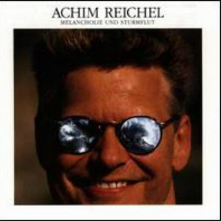

因为太菜所以没什么作品，就简简单单给大家拜个年吧
作品1————我拍的熊猫

作品2—————我摘的葡萄

作品3—————我打的游戏

我觉得差不多了我不想再鞭尸自己了

出生地：陕西西安
出生年月：2000年3月5日
职业：学生
入学日期：2018年9月16日
本科就读：浙江传媒学院
专业：软件工程
婚姻状况：单身
宗教信仰：无
回到顶部
十月一日
今天是国庆第一天，学习组织了升旗仪式，和集体看阅兵，看完之后我深感空虚，虽然放假了但是我并没有任何假期打算，真是腐败呢
十月二日
放假的第二天浑身慵懒不想起床一直拖到十一点，爬起来洗漱之后追剧。
十月四号
昨天忘记了写日志，但是具体情况和第二天放假并没有什么区别，虽然今天也是这样。
十月五号
慵懒了好几天我突然觉得看电视剧也没有意思了（主要是看完了），决定拉着舍友出门走走，选择了一家日料店开始了暴饮暴食。
十月六日
今天终于跑去看了国庆献礼片《我和我的祖国》真好看强烈推荐。
十月七日
哇！明天假期就结束了，看着眼前的作业，我满脑子都是，后悔以及默默的进行百度————如何回到七天前。
回到顶部
因为太菜所以没什么作品，就简简单单给大家拜个年吧
作品1————我拍的熊猫
作品2—————我摘的葡萄
作品3—————我打的游戏
我觉得差不多了我不想再鞭尸自己了


电话：13759991122
QQ：1669898505
微信：1669898505
邮箱：1669898505@qq.com
回到顶部